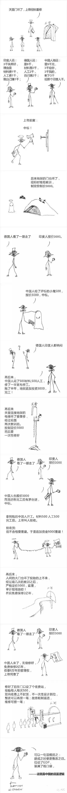
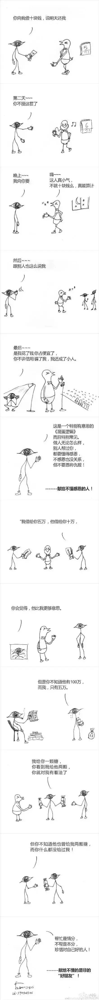
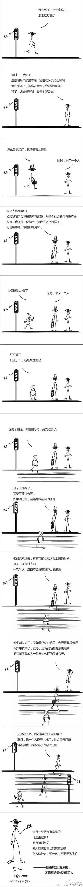

互惠动态
|
|
混蛋逻辑！
《中国式思维》之混蛋思维——赚钱的最高境界。

不得不承认中国人是很聪明的，不论是智商还是情商，我们都不输给这世界上的任何一个民族。尤其是在赚钱的问题上，中国人总能够变着花样捞银子。
然而，这种极尽聪明才智的背后是，有的人走后门搞工程，有的人塞票子中投标，然后，有了豆腐渣桥梁，有了塑料板井盖，有了毒奶粉等等。这种“一切向钱看”的混蛋逻辑不可取，投机取巧终会自食苦果。
《中国式思维》之混蛋思维——不懂感恩。

关于借钱的事情，求你时恨不得跪在地上叫爷爷，但是还钱的时候，非逼得你跪在地上叫爷爷。你是债主，反而跟孙子一样，最后还要被人说成是不够朋友。这真的是典型的不要脸思维，不懂得感恩，倒是学会了恩将仇报。
还有一种人，你每天给他一个鸡蛋，只要一天不给他，就会抱怨你，甚至对你充满愤恨。他忘记了，其实你并不欠他鸡蛋，你给他是情分，你不给是本分。这样的人就该每天给他一个耳光，如果哪天忘了给，他就会万分感激你。
《中国式思维》之混蛋思维——过马路。

自古以来，中国人的逻辑里常常有一种“人云亦云”、“法不责众”、“见风使舵”的习惯。或许刚开始的时候，你有自己的原则，你也分得清对错，但是当越来越多的人都在做这件错事的时候，你就动摇了。你开始怀疑对的这件事值不值得坚持，你开始羡慕错的这件事带来的利益，你开始畏惧别人说你不合群，你开始自欺欺人地随大流。
即使你知道自己正在做着一件错事，你也努力让自己看起来心安理得，你不断地在心里告诉自己：不是我先做错的，是很多人都这样做了，我才跟着做的，我很渺小，我努力坚持原则也无济于事，是社会风气坏了。
就好像，你看到有人在草坪里踩出一条捷径，你站在那里不知所措，你知道从这里走是不对的，但是走大路要绕远一倍的距离。你看到很多人都从这里走过，你看到捷径上的小草早就被踩死，你在心里告诉自己：这路不是我踩出来，即使我不走别人也会走，小草还是会死。于是，你成功说服自己，和大家一起从草坪穿过。
像这样的人多了，就成了社会风气，带动更多像你一样的人加入这种风气，于是雪球越滚越大，就成了一个民族、一个国家的思维。这是一种悲哀。然而，如果你在一开始就能坚守原则，那么，所有的一切都将逆转。所以，请坚信你的力量，你的行动能改变这种混蛋逻辑，因为你不仅是你自己，你也是中国的国民。
让人宽心的是，越来越多的中国年轻人摒弃了这些思维。

关于互惠，您了解得够多么？
请外国学生来家庭照顾孩子，辅导孩子外语？
只了解这些是不够的！
获取更多信息请参考以下方式：
联系ASC：
电话：86-21-61116069(上海中心）
86-25-66065662（南京中心）
全国家庭均可申请！
手机：15601666586（可加微信）
Q Q：3259637585
微信：asc-center
邮箱：info@asc-center.com
网站：www.asc-aupair.com

感谢您对我们的关注